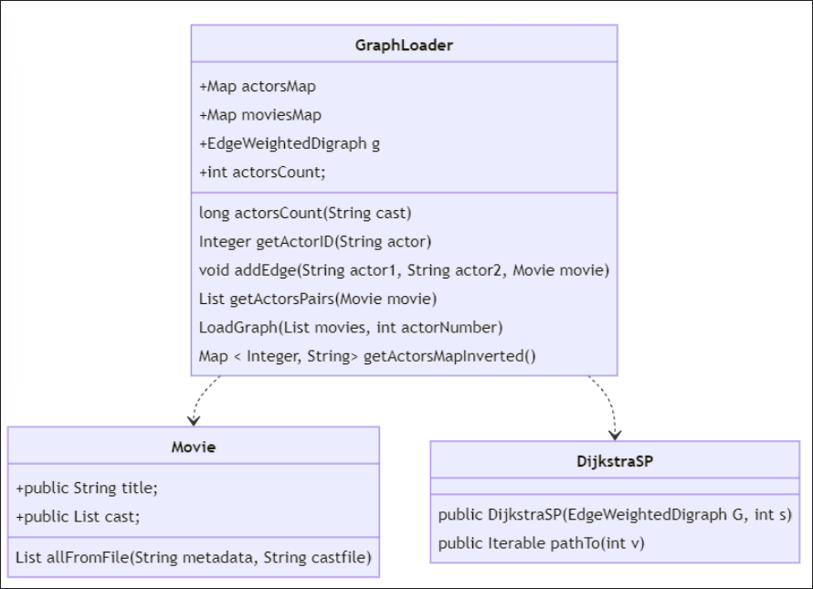

Examen 2022 — Parcial 1 Recuperación
Problema 1
Utilizando el modelo de datos de la práctica 2 donde un vértice representaba un actor y una arista representa la película en la que han colaborado ambos actores. Se disponen las clases GraphLoader, Movie y DijkstraSP que podemos utilizar para resolver el problema. Y en el campo EdgeWeightedDigraph g de la clase GraphLoader tenemos ya cargado el grafo de actores y películas. Según el siguiente diagrama de clases:


Se pide: - (a) (1 punto) Desarrolle el método obtenerIndiceMayor: Recibe un array de enteros y devuelve un int con el índice de la posición con el valor mayor. En caso de empate, se puede devolver cualquiera de los n índices que empatan: public int obtenerIndiceMayor(int[] array)
Mostrar solución
public int obtenerIndiceMayor(int[] array) {
if (array == null || array.length == 0)
return -1; // null or empty
int largest = 0;
for (int i = 1; i < array.length; i++) {
if (array[i] > array[largest])
largest = i;
}
return largest; // position of the first largest found
}
- (b) (2 punto) El algoritmo Dijkstra calcula el árbol de caminos más cortos desde un nodo. El constructor calcula este algoritmo y proporciona un método (pathTo) para obtener el camino mínimo desde el origen. Se pide desarrollar el método actorCentralDesdeOrigen que retorna un array, cuyo tamaño es el número de vértices (en el grafo) y sus valores son el número de veces que aparece el vértice en cualquier camino: public int[] actorCentralDesdeOrigen(int origen)
Mostrar solución
public int[] actorCentralDesdeOrigen(int origen) {
int[] btw = new int[this.g.V()];
for (int destino = origen + 1; destino < this.g.V(); destino++) {
if ((origen != destino) && (g.pathTo(destino) != null)) {
for (DirectedEdge e : g.pathTo(destino)) {
if (e.to() != destino)
btw[e.to()]++;
}
}
}
return btw;
}
- (c) (2 punto) Desarrolle el método que retorne el actor más central del grafo. Para ello, hay que calcular el actor más central entre los árboles de caminos de los vértices del grafo: public String actorCentral()
Mostrar solución
public String actorCentral() {
int[] btw = new int[this.g.V()];
for (int origen = 0; origen < this.g.V(); origen++) {
DijkstraSP d = new DijkstraSP(this.g, origen);
int[] aux = this.actorCentralDesdeOrigen(origen);
for (int i = 0; i < this.g.V(); i++) { // corregido inicialización de i
btw[i] += aux[i];
}
}
int actor = obtenerIndiceMayor(btw);
Map<Integer, String> actorsMapInverted = this.getActorsMapInverted();
return actorsMapInverted.get(actor);
}
Nota: es muy aconsejable desarrollar estos métodos en el mismo orden y desarrollar el tercer método usando los dos anteriores.
Problema 2
Se dispone de un array de números enteros, que incluye n secuencias repetidas de números ordenados ascendentemente del 1 al m. Por ejemplo, si m es 8, y n es 4, el contenido del array será [1,2,3,4,5,6,7,8,1,2,3,4,5,6,7,8,1,2,3,4,5,6,7,8,1,2,3,4,5,6,7,8]. Se ha ordenado el array (en sentido ascendente) con los algoritmos que se muestran posteriormente. En algunas respuestas hay que contestar cantidades de ejecución de código, basado en los valores genéricos de n y m. En este caso, se pueden contestar las cantidades aproximadas como n2.m, n.log m o n.m2):
- (a) (1 punto) Ordenación por intercambio (burbuja): ¿Cuántas comparaciones (en la línea 6) de número hacemos? Una implementación del algoritmo sería:
Intercambio:
01 public static void sort(int[] data) {
02 boolean changed;
03 do {
04 changed = false;
05 for (int i = 0; i < data.length - 1; i++) {
06 if (data[i] > data[i + 1]) {
07 swap(data, i, i + 1);
08 changed = true;
09 }
10 }
11 } while (changed);
12 }
Mostrar solución
Número de comparaciones: (n x m - 1) x ((m-1)x(n-1)+1). El bucle interior for se ejecuta siempre m x n – 1 veces (la longitud del array menos una vez). El bucle while va haciendo desplazamientos para todos los números de la secuencia, menos los 1 (m-1), y desplaza todas las secuencias menos la última que ya estará ordenada al final (n-1), el algoritmo necesita una última ejecución de for para comprobar que todo está ordenado.
- (b) (1 punto) Ordenación por selección: ¿Cuántas comparaciones de número se ejecutan en el algoritmo mostrado al ordenar un array?
Selección:
01 public static void sort(int[] data) {
02 for (int i = 0; i < data.length - 1; i++) {
03 int j = min(data, i, data.length);
04 swap(data, i, j);
05 }
06 }
07 private static int min(int[] data, int a, int z) {
08 int m = a;
09 for (int i = a; i < z; i++)
10 if (data[i] < data[m])
11 m = i;
12 return m;
13 }
Mostrar solución
Número de comparaciones: (n x m) x (1 + n x m) / 2. El algoritmo de selección ejecuta la primera vez el método min para valores de 0 a data.length-1, el siguiente para 1 a data.length-1, el siguiente de 2 a data.length-1, y el último de data.length-2 a data.length-2. Eso es el sumatorio de n=1 a data.length-1, que es la expresión dada.
- (c) (1 punto) Ordenación por mergesort: ¿Cuántas ejecuciones del cuerpo de la sentencia while (línea 10)se ejecutan al ordenar un array?. A continuación, se muestra una implementación de este algoritmo:
01 public static void sort(int[] datos) {
02 if (datos.length < 2)
03 return;
04 int m = datos.length / 2;
05 int[] izq = Arrays.copyOfRange(datos, 0, m);
06 int[] der = Arrays.copyOfRange(datos, m, datos.length);
07 sort(izq);
08 sort(der);
09 int dest = 0; int i = 0; int d = 0;
10 while (i < izq.length || d < der.length) {
11 if (d == der.length) {
12 datos[dest++] = izq[i++];
13 continue;
14 }
15 if (i == izq.length) {
16 datos[dest++] = der[d++];
17 continue;
18 }
19 if (izq[i] < der[d])
20 datos[dest++] = izq[i++];
21 else
22 datos[dest++] = der[d++];
23 }
24 }
NOTA: El siguiente método es estático en la clase Arrays. Copia el rango especificado del array original en un array nuevo.
static int [] copyOfRange(int[] original, int from, int to)
Mostrar solución
Número de comparaciones: (m x n) log2 (n x m) La complejidad de mergesort es siempre igual y el número de vueltas del bucle while depende de las multiplicidades de m x n de 2. Pero siempre será un valor aproximadamente el dado.
- (d) (1,5 puntos) Se quiere desarrollar el método secuenciasRepetidas que recibe un array de enteros y devuelve un valor lógico, que indica si el contenido del array es una secuencia correcta, como se describe en este enunciado; antes de retornar, el método actualiza dos atributos m y n con los valores de m y n descritos en este enunciado.
Las secuencias deben aparecer completas (por ejemplo, [1,2,3,1,2] devolverá falso; n y m son números mayores o iguales a 1, pero la secuencia puede ser única (por ejemplo, si n = 1, m = 3, [1,2,3] devuelve verdadero; si n= 1 y m=1, [1] devuelve verdadero); las secuencias empiezan por 1 y la diferencia entre términos es 1. La puntuación de la pregunta será mayor para soluciones más eficientes, y menor para las soluciones más ineficientes.
public boolean secuenciasRepetidas(int[] data)
Mostrar solución
private int m, n;
public boolean secuenciasRepetidas(int[] data) {
int m = 1;
if (data.length == 0 | data[0] != 1) return false;
while (m < data.length + 1 && data[m - 1] == m)
m++;
m--;
if (m == data.length) {
this.m = m;
this.n = 1;
return true;
}
if (data[m] != 1 || data.length % m != 0) return false;
int i = m;
while (i < data.length && data[i] == (i % m + 1))
i++;
if (i != data.length) return false;
this.m = m;
this.n = data.length / m;
return true;
}
- (e) (0,5 puntos) Calcular la complejidad del algoritmo implementado en el apartado 4).
Mostrar solución
La complejidad de esta implementación es lineal. O(n) donde n=data.length. O bien el bucle de la línea 6 recorre todo el array y el método termina, o el bucle de la línea 16 termina de recorrer el array, o en algún momento anterior el método detecta que el patrón buscado no se encuentra en el array y el método termina.